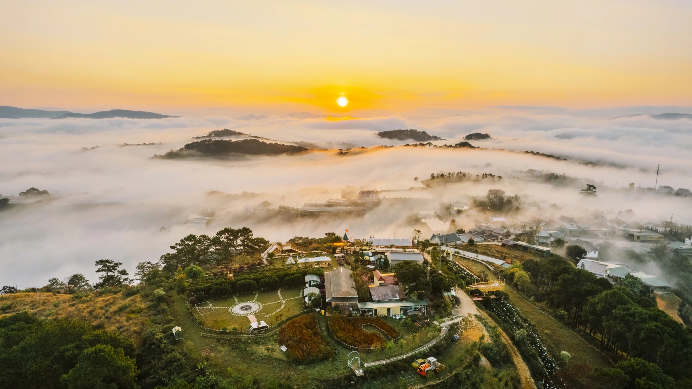
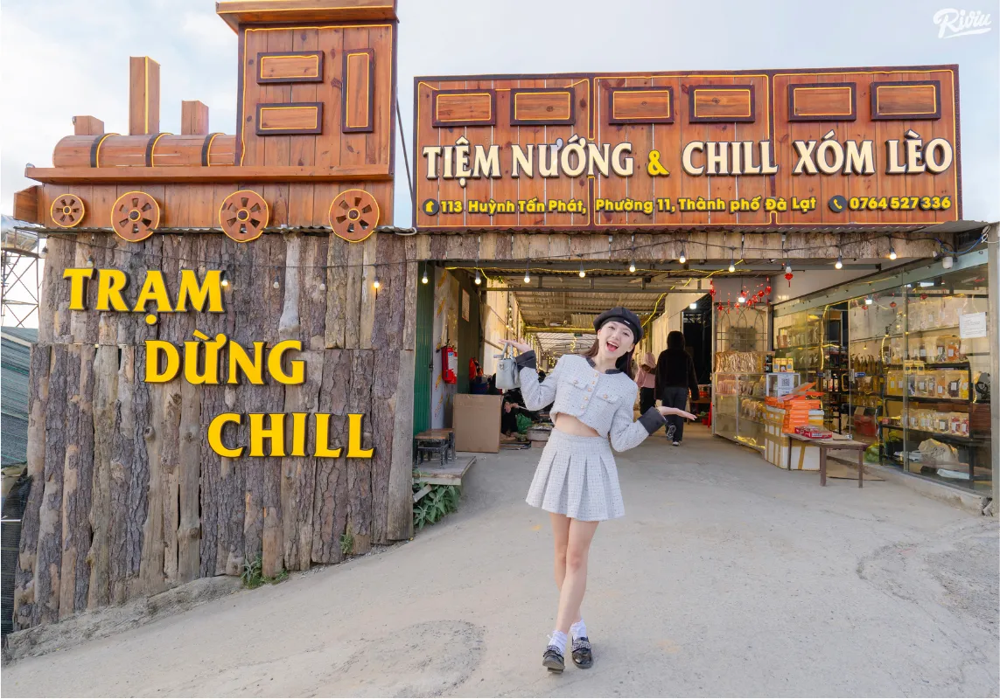
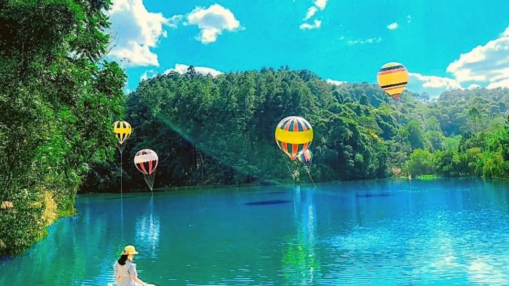
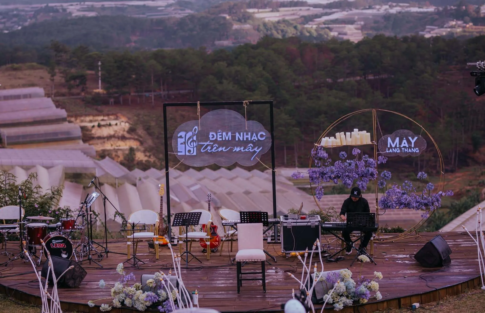
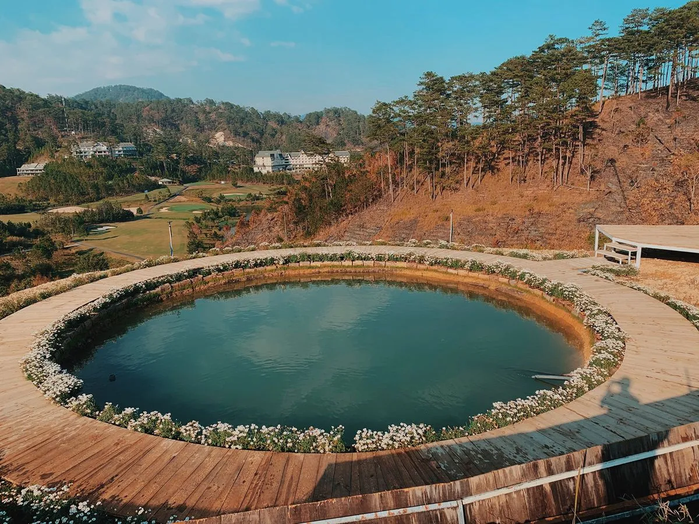

Top 11 địa điểm chill ở Đà Lạt để thư giãn và check-in đẹp

Mục lục bài viết
- 1. Hồ Tuyền Lâm – Địa điểm chill ở Đà Lạt gần gũi với thiên nhiên
- 2. Đồi Thiên Phúc Đức – Địa điểm chill ở Đà Lạt để săn mây và bình minh
- 3. Làng Cù Lần – Địa Điểm Chill Ở Đà Lạt Dành Cho Gia Đình
- 4. Khu Du Lịch Đồi Mây – Địa điểm chill ở Đà Lạt có view săn mây
- 5. Hồ Xuân Hương – Chỗ đi chơi Đà Lạt giữa trung tâm Thành Phố
- 6. Chợ Đà Lạt – Chỗ đi chơi Đà Lạt về đêm nhộn nhịp
- 7. Tiệm Nướng & Chill Xóm Lèo – Địa điểm chill ở Đà Lạt độc lạ
- 8. Tiệm Cà Phê Túi Mơ To – Check-in Đà Lạt giữa vườn hoa
- 9. Lạc Tiên Giới – Check-in Đà Lạt với cánh cửa trời
- 10. Mây Lang Thang – Địa điểm chill ở Đà Lạt cho tín đồ âm nhạc
- 11. The Wilder-nest – Địa Điểm Chill Ở Đà Lạt Tách Biệt & Bình Yên

Đà Lạt không chỉ nổi tiếng với hoa, rừng thông và khí hậu mát lạnh, mà còn là thiên đường dành cho những ai muốn tìm một địa điểm chill ở Đà Lạt để thư giãn, sống chậm, và tận hưởng không khí bình yên hiếm có. Nếu bạn đang tìm kiếm chỗ đi chơi Đà Lạt yên tĩnh nhưng vẫn có thể check-in Đà Lạt với những góc ảnh lung linh, bài viết này là dành cho bạn!
1. Hồ Tuyền Lâm – Địa điểm chill ở Đà Lạt gần gũi với thiên nhiên
Hoạt động gợi ý:
-
Chèo kayak, sup ngắm cảnh
-
Cắm trại, tổ chức picnic
-
Check-in Đà Lạt với ảnh mặt hồ lung linh lúc bình minh
📍 Địa chỉ: Cách trung tâm Đà Lạt 7km, theo hướng Thiền Viện Trúc Lâm
2. Đồi Thiên Phúc Đức – Địa điểm chill ở Đà Lạt để săn mây và bình minh

Đồi Thiên Phúc Đức là chỗ đi chơi Đà Lạt lý tưởng dành cho những ai yêu thích sự tĩnh lặng và không gian thiên nhiên nguyên sơ. Tại đây, bạn có thể săn mây vào sáng sớm, đón ánh bình minh huyền ảo, và đặc biệt là chụp ảnh cùng cây cô đơn – biểu tượng sống ảo nổi tiếng gắn liền với hình ảnh thơ mộng của Đà Lạt.
Hoạt động gợi ý:
-
Cắm trại, đốt lửa
-
Săn mây buổi sáng sớm
-
Check-in Đà Lạt cực “deep” với khung cảnh thơ mộng
📍 Địa chỉ: Phường 7, gần khu vực núi Langbiang
3. Làng Cù Lần – Địa Điểm Chill Ở Đà Lạt Dành Cho Gia Đình

Nếu bạn muốn tìm một địa điểm chill ở Đà Lạt kết hợp giữa không gian xanh và trải nghiệm văn hóa, thì Làng Cù Lần là lựa chọn cực kỳ thú vị. Với khung cảnh thiên nhiên hoang sơ, làng còn có các hoạt động như chèo bè, tham quan nhà sàn, hay khám phá đời sống người dân tộc – rất phù hợp cho gia đình và nhóm bạn muốn vui chơi, thư giãn và gắn kết.
Hoạt động gợi ý:
-
Tham quan làng dân tộc K’ho
-
Chèo bè, cưỡi ngựa
-
Check-in Đà Lạt với cây cầu gỗ và nhà cổ truyền
📍 Địa chỉ: Xã Lát, huyện Lạc Dương, tỉnh Lâm Đồng
4. Khu Du Lịch Đồi Mây – Địa điểm chill ở Đà Lạt có view săn mây

Đồi Mây là địa điểm chill ở Đà Lạt được nhiều người yêu thích nhờ sự kết hợp hoàn hảo giữa quán cà phê, săn mây và ngắm cảnh. Nằm trên đồi cao, nơi đây sở hữu view cực phẩm với biển mây bồng bềnh vào sáng sớm và không gian thoáng đãng lý tưởng để thư giãn, chụp ảnh check-in hay nhâm nhi ly cà phê ấm giữa trời se lạnh.
Hoạt động gợi ý:
-
Thưởng thức cà phê giữa mây trời
-
Sống ảo với nhà kính và ghế mây
-
Tạo những bức ảnh check-in Đà Lạt không đụng hàng
📍 Địa chỉ: Phường 11, TP. Đà Lạt
5. Hồ Xuân Hương – Chỗ đi chơi Đà Lạt giữa trung tâm Thành Phố
Ảnh: Hồ Xuân Hương - Địa điểm chill ở Đà Lạt
Nếu bạn ngại di chuyển xa, Hồ Xuân Hương chính là chỗ đi chơi Đà Lạt ngay trung tâm thành phố, lý tưởng để tản bộ, đạp xe dạo quanh hồ, uống cà phê ven hồ và cảm nhận sự yên bình đặc trưng của Đà Lạt. Không gian thoáng đãng, thơ mộng nơi đây luôn là điểm dừng chân yêu thích của cả du khách và người địa phương.
Hoạt động gợi ý:
-
Đạp vịt, tản bộ ven hồ
-
Uống cà phê tại các quán như Thanh Thủy, Bích Câu
-
Ngắm hoàng hôn lãng mạn và check-in Đà Lạt về đêm
📍 Địa chỉ: Trung tâm thành phố, cạnh chợ Đà Lạt
6. Chợ Đà Lạt – Chỗ đi chơi Đà Lạt về đêm nhộn nhịp

Không thể bỏ qua Chợ Đà Lạt – nơi tụ hội của hàng trăm món ăn vặt hấp dẫn và đặc sản địa phương. Không chỉ là thiên đường ẩm thực, đây còn là điểm check-in Đà Lạt về đêm cực kỳ sôi động với ánh đèn rực rỡ, không khí nhộn nhịp và nhiều góc chụp ảnh đẹp không thể cưỡng lại.
Hoạt động gợi ý:
-
Ăn bánh tráng nướng, sữa đậu nành
-
Mua đặc sản như mứt, dâu tây sấy
-
Chụp ảnh với không khí chợ đêm rực rỡ
📍 Địa chỉ: Nguyễn Thị Minh Khai, phường 1, TP. Đà Lạt
7. Tiệm Nướng & Chill Xóm Lèo – Địa điểm chill ở Đà Lạt độc lạ

Nếu bạn vừa muốn chill vừa muốn thưởng thức những món nướng ngon miệng trong không gian đặc biệt, Tiệm Nướng & Chill Xóm Lèo chính là điểm đến lý tưởng. Quán mang phong cách giản dị nhưng vô cùng ấm cúng, giúp bạn tận hưởng trọn vẹn khí hậu se lạnh của Đà Lạt.
Điểm đặc biệt của Tiệm là bảng hiệu hình đoàn tàu độc đáo, giúp thực khách dễ dàng nhận diện quán giữa vô số tiệm khác. Ngoài ra, quán nằm ngay bên cạnh cầu vượt đường sắt, một điểm mốc dễ nhận biết giúp bạn tránh đi nhầm vào những quán có tên tương tự.
Điểm đặc biệt:
-
Món nướng nóng hổi hợp với không khí lạnh
-
Không gian đèn vàng ấm cúng
-
Có nhạc acoustic và không gian mở chill cực đã
📌 Địa chỉ: 113 Huỳnh Tấn Phát, Phường 11, Đà Lạt, Lâm Đồng 67000
📌 Đặt bàn: Tại Đây
📌 Google Maps: Xem Đường Đi
📌 Hotline: 076.45.27.336 – 08.99.42.84.34 – 0902.91.22.40
8. Tiệm Cà Phê Túi Mơ To – Check-in Đà Lạt giữa vườn hoa

Túi Mơ To là chỗ đi chơi Đà Lạt nổi tiếng với view vườn hoa rực rỡ, bao quanh bởi khung cảnh đồi núi thơ mộng, trữ tình. Không gian nơi đây mang nét vintage nhẹ nhàng, rất phù hợp để thư giãn, nhâm nhi cà phê và đặc biệt là sống ảo với những góc chụp đầy nghệ thuật – lý tưởng cho giới trẻ yêu thích check-in và tìm cảm hứng sáng tạo.
Hoạt động gợi ý:
-
Chụp ảnh với cúc họa mi, nhà kính
-
Uống cà phê giữa vườn hoa
-
View săn mây cực chill buổi sáng
📍 Địa chỉ: Hẻm 31 Sào Nam, P11, TP. Đà Lạt
9. Lạc Tiên Giới – Check-in Đà Lạt với cánh cửa trời

Một trong những điểm check-in Đà Lạt “ảo diệu” bậc nhất hiện nay chính là Lạc Tiên Giới. Với khung cảnh huyền ảo như bước ra từ truyện cổ tích, bạn có thể tạo dáng cùng đàn piano bay giữa hồ, cầu treo lơ lửng giữa trời, hay khinh khí cầu giả nổi bật – tất cả tạo nên những bức ảnh độc đáo và cực kỳ cuốn hút trên mạng xã hội.
Hoạt động gợi ý:
-
Sống ảo cùng các góc chụp được dàn dựng độc đáo
-
Chụp ảnh cưới, ảnh đôi
-
Dạo chơi trong không gian huyền ảo như cổ tích
📍 Địa chỉ: Hẻm 1/3 Lâm Sinh, Phường 5, TP. Đà Lạt
10. Mây Lang Thang – Địa điểm chill ở Đà Lạt cho tín đồ âm nhạc

Mây Lang Thang là điểm hẹn âm nhạc lãng mạn, lý tưởng cho những ai muốn tận hưởng Đà Lạt chill theo cách riêng. Với không gian nhẹ nhàng, thơ mộng giữa thiên nhiên và các đêm nhạc acoustic ấm cúng, nơi đây mang đến trải nghiệm thưởng thức nhạc sống đầy cảm xúc – rất phù hợp để thư giãn sau một ngày khám phá thành phố sương mù.
Điểm nổi bật:
-
Đêm nhạc acoustic với các nghệ sĩ nổi tiếng
-
Không gian ấm áp, đậm chất Đà Lạt
-
Check-in Đà Lạt với khung cảnh lung linh ban đêm
📍 Địa chỉ: 2 Trần Quang Diệu, Phường 10, TP. Đà Lạt
11. The Wilder-nest – Địa Điểm Chill Ở Đà Lạt Tách Biệt & Bình Yên

The Wilder-nest nằm ẩn mình giữa một thung lũng yên bình, là địa điểm chill ở Đà Lạt dành cho những ai yêu thiên nhiên và mong muốn tìm một góc nhỏ để “trốn cả thế giới”. Với view đồng cỏ, đồi núi và những chiếc ghế gỗ mộc mạc hướng ra thiên nhiên, nơi đây mang lại cảm giác an yên, lý tưởng để thư giãn, đọc sách, chụp ảnh và sống chậm đúng chất Đà Lạt.
Hoạt động gợi ý:
-
Thưởng thức cà phê view thung lũng
-
Chụp ảnh với cầu gỗ và nhà gỗ nhỏ
-
Nghỉ dưỡng trong không gian siêu yên tĩnh
📍 Địa chỉ: Gần Hồ Tuyền Lâm, TP. Đà Lạt
Nếu bạn là người yêu thiên nhiên, đam mê sống ảo hay chỉ đơn giản muốn tìm một chỗ đi chơi Đà Lạt yên tĩnh để “nạp năng lượng”, thì danh sách trên chính là thứ bạn cần! Dù là săn mây, uống cà phê, hay check-in Đà Lạt với khung cảnh thần tiên, Đà Lạt luôn có một góc chill dành riêng cho bạn. Và đừng quên ghé Tiệm Nướng & Chill Xóm Lèo – nơi vừa ấm cúng, vừa độc đáo để thưởng thức đồ nướng ngon, chill cùng ánh đèn lung linh khi nhà lồng lên đèn và trải nghiệm cảm giác săn tàu lửa chạy ngang.